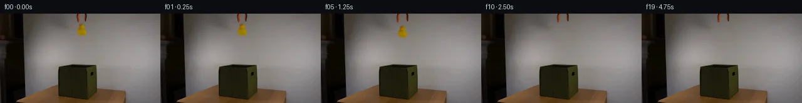

![首帧]()

Round 00
2026-11-05T02:05:52.965374+00:00像素候选变化代码 +217/−0inspection 更新
pixels 2fd144da8ff2fc59 · code d3592ffbfcbf8a3b
查看本轮 generate.py 真实 diff
--- previous/generate.py
+++ current/generate.py
@@ -0,0 +1,217 @@
+"""Source-pixel continuation, built with NumPy/Pillow/SciPy only.
+
+No external assets, models, renderer, network, or image viewing are used.
+Run from this workspace: python generate.py
+"""
+from pathlib import Path
+import json
+import numpy as np
+from PIL import Image, ImageDraw
+from scipy.ndimage import map_coordinates, gaussian_filter
+import artifact_io
+
+ROOT = Path(__file__).resolve().parent
+W, H, COUNT, FPS = 256, 144, 20, 4
+SOURCE = np.asarray(Image.open(ROOT / 'first_frame.png').convert('RGB'))
+PLATE = SOURCE.astype(np.float64)
+YY, XX = np.mgrid[:H, :W].astype(float)
+RELEASE = 1.17
+GRAVITY = 1050.0
+SHUTTER = 1 / 70.0
+
+
+def wall_estimate():
+ """Interpolate the local wall's illumination and transfer its own fine grain."""
+ # All reference columns are clear wall next to the source objects.
+ left = np.median(PLATE[:, 117:121], axis=1)
+ right = np.median(PLATE[:, 141:145], axis=1)
+ fraction = np.clip((XX - 118.5) / 24, 0, 1)
+ smooth = left[:, None, :] * (1 - fraction[..., None]) + right[:, None, :] * fraction[..., None]
+ # A close, clean wall sample retains the sensor texture at a matching height.
+ nearby = PLATE[:, np.minimum(np.arange(W) + 23, W - 1)]
+ residual = nearby - gaussian_filter(nearby, sigma=(1.1, 1.1, 0))
+ return np.clip(smooth + 0.45 * residual, 0, 255)
+
+
+WALL = wall_estimate()
+
+
+def extract_layer(bounds, blue_floor):
+ """Solve a local blue-channel matte and retain photographed R/G detail.
+
+ Both subjects have near-zero blue against a neutral wall. The modest blue
+ floor also covers the grabber's nearly black edges. This is a local manual
+ rectangle plus numerical chromatic matte, not semantic segmentation.
+ """
+ x0, y0, x1, y1 = bounds
+ a = np.zeros((H, W), dtype=float)
+ region = np.s_[y0:y1, x0:x1]
+ delta = WALL[region][..., 2] - PLATE[region][..., 2]
+ denominator = np.maximum(WALL[region][..., 2] - blue_floor, 1)
+ local = np.clip(delta / denominator, 0, 1)
+ local[delta < 3.5] = 0
+ a[region] = local
+ # Premultiplied colors avoid fringe colors during interpolation.
+ premul = PLATE - (1 - a[..., None]) * WALL
+ premul = np.clip(premul, 0, a[..., None] * 255)
+ return a, premul
+
+
+DUCK_ALPHA, DUCK_RGB = extract_layer((121, 15, 140, 38), 0)
+TOOL_ALPHA, TOOL_RGB = extract_layer((121, 0, 140, 15), 4)
+LEFT_ALPHA = TOOL_ALPHA * (XX < 130)
+RIGHT_ALPHA = TOOL_ALPHA * (XX >= 130)
+LEFT_RGB = TOOL_RGB * (XX < 130)[..., None]
+RIGHT_RGB = TOOL_RGB * (XX >= 130)[..., None]
+
+# Reconstruct only the vacated footprints. Clear matte pixels remain exact.
+CLEAN = PLATE.copy()
+FOOTPRINT = (DUCK_ALPHA > 0) | (TOOL_ALPHA > 0)
+CLEAN[FOOTPRINT] = WALL[FOOTPRINT]
+
+# Front-lip profile measured from the source fabric colors. Below it, the
+# original front face hides the descending duck; the back rim stays behind it.
+LIP_X = np.array([93, 95, 110, 125, 136, 142, 152, 154], float)
+LIP_Y = np.array([86.0, 86.1, 86.4, 86.7, 86.9, 85.4, 84.3, 84.2], float)
+LIP = np.interp(XX, LIP_X, LIP_Y)
+FRONT_VISIBILITY = np.clip(LIP - YY + 0.1, 0, 1)
+FRONT_VISIBILITY[(XX < 93) | (XX > 154)] = 1
+
+
+def resample(a, p, sx, sy):
+ coords = np.array([sy, sx])
+ alpha = map_coordinates(a, coords, order=1, mode='constant', cval=0, prefilter=False)
+ rgb = np.stack([map_coordinates(p[..., c], coords, order=1, mode='constant', cval=0, prefilter=False) for c in range(3)], -1)
+ return alpha, rgb
+
+
… diff truncated; 130 more lines …